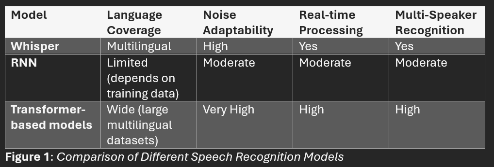

<!DOCTYPE html>

<html>

  <head>
 


  </head>

  </html>
  <h1><b>ENG0018 Computer Laboratory 2024/25</b></h1>
  <h2>Student URN: 6901544</h2>
    <hr>
    <h2 style="font-family:Times New Roman;"><b>The Advancements of Speech Recognition in Human-Machine Communication </b></h2>
      <hr>

    <!style for tables>
    <style>
      table {
          font-family: Times New Roman;
          border-collapse: collapse;
          width 30%;

        } 

        td, th {
            border: 1px solid #dddddd;
            text-align: left;
            padding: 8px;
        }

      tr:nth-child(even) {
         background-color: #dddddd;
      }
   
        </style>

    <style>
     p.ex1 {
       margin-left: 250px;
  }
    </style>
     </head>

  <meta name="viewport" content="width=device-width, initial-scale=1">
  <link rel="stylesheet" href="https://emea01.safelinks.protection.outlook.com/?url=https%3A%2F%2Fwww.w3schools.com%2Fw3css%2F4%2Fw3.css&data=05%7C02%7C%7Cf9b8dd8d0c254ac2d55308dd1594d3e7%7C84df9e7fe9f640afb435aaaaaaaaaaaa%7C1%7C0%7C638690451165858648%7CUnknown%7CTWFpbGZsb3d8eyJFbXB0eU1hcGkiOnRydWUsIlYiOiIwLjAuMDAwMCIsIlAiOiJXaW4zMiIsIkFOIjoiTWFpbCIsIldUIjoyfQ%3D%3D%7C0%7C%7C%7C&sdata=nrStS0vTIg99kx2yNM%2Ba0gTmc18WO4b9%2F7j0uOJOppU%3D&reserved=0">
  <style>
   .mySlides {display:none;}
  </style>
  <body style="backgroumd-color:#ADD8E6;margin-left:50px;">
  </style>


    <!table of contents>
    <table>

      <tr>
        <th><h3>Table of contents</h3></th>
      </tr>
     
      <tr>
        <td><a href="#Abstract">Abstract</td>
      </tr>
     
      <tr>
        <td><a href="#Introduction">Introduction</td>
      </tr>
     
      <tr>
        <td><a href="#Main Body">Main Body</td>
      </tr>
        <tr>
     <td><a href="#Conclusion">Conclusion</td>        
      </tr>
      <tr>
     <td><a href="#References">References</td>        
      </tr>
    </table>


  <hr>
    <h3>
      <h3 id="Abstract">Abstract</h3>
      <p class="ex1" >
      <pre>
      From the early systems like Audrey to deep-learning-driven models, speech recognition has come a long way. Major milestones include Hidden Markov Models, neural networks, 
      and transformer architectures that have led to improvements in accuracy and adaptability in various environmental conditions. Recent efforts, including Whisper and multilingual 
      ASR systems, have been targeted toward linguistic diversity and real-time processing applications ranging from virtual assistants and transcription to IoT. Still, noise 
      interference, multi-speaker challenges, bias, and excessive use of energy remain big challenges to address. The way forward encompasses self-supervised learning to leverage 
      the opportunities for deeper interactive scope and inclusivity through a multidirectional model. Continuous innovation is paramount, so that this powerful potential might be 
      socially and industrially sanguine.
      </pre>
    </p>

<hr>
      <video src="ENG0018 Presentation (1).mp4" width="800" height="450" controls>
      </video>
<hr>
 
<h3 id="Introduction">Introduction</h3>
      <P class="ex1">
       
        <pre id="Introduction_InText">
     Speech recognition technology has come of age in developing a method of interaction between man and machine. Early systems, such as Audrey at Bell Labs in 1952, 
     employed pattern recognition and template matching for the decoding of isolated words or digits. The more robust Hidden Markov Models introduced during the 1980s 
     enabled the system to accommodate variations in the pattern of speech (Mehrish et al., 2023). These innovations set the path for the usage of applications such as 
     dictation software and IVR systems. State-of-the-art speech recognition systems use deep learning and Natural Language Processing (NLP) technologies today, yielding 
     unprecedented accuracy and ease of use (Shrivastava et al., 2023). By increasing the knowledge in noise reduction and signal processing techniques, it increases the 
     potential for systems to be more adaptive in a noisy or variably acoustic environment. Thus, speech recognition applications range from Siri and Alexa, transcription 
     services, to accessibility tools (Mehrish et al., 2023). Even though the accuracy rates reached are high (95%), pre-processing, scalability, and emotional adaptability 
     remain big areas targeted for further improvements.
 
    </pre>
    </p>
     
  <h3 id="Main Body">Main Body</h3>
<p class="ex1">
    <pre id="MainBody_InText">
      <b> <u>Recent Speech Recognition Developments</u></b>
     More recently, speech recognition has been closely allied with deep learning techniques, including RNNs and transformer architectures. These have substantially increased the 
       accuracy of ASR and speech-to-text. The main differences between different models, including Whisper, RNNs, and transformer-based models, are summarized in Figure 1 and can 
       be understood from several key aspects such as language coverage, noise adaptability, real-time processing, and multi-speaker recognition.

                        
   
      The Whisper model, for example, stands out in multilingual support since it is based on transformer technology, training on vast multilingual datasets that can handle a wide range 
       of accents and languages with high accuracy, even in noisy environments. On the other hand, RNN-based models, though effective, show limitations in language coverage and real-time 
       processing, with their overall quality highly dependent on the quality of the training data (Yao and Yao, 2023). These models are usually less effective in complex environments, 
       such as those with overlapping speech, as shown in the moderate ratings for noise adaptability and multi-speaker recognition. The transformer-based models, as shown in Figure 1, 
       reach the best balance, providing wide language coverage, high noise adaptability, and strong real-time processing, hence being highly effective in dynamic, multilingual, and noisy 
       contexts. Further latency reduction and accuracy improvement were achieved with the advent of end-to-end streaming models (Yao and Yao, 2023). Such models have significantly 
       improved the real-time performance that enables the construction of responsive systems such as conversational agents and live transcription services. Multi-speaker recognition 
       frameworks have been advancing toward handling overlapped speech, which further refines the speech recognition systems to perform even in complex scenarios, as shown in Figure 1 
       (Guo, 2024). 
     

 <b> <u>Application Challenges</u></b>
While speech recognition technology has achieved great milestones, it also faces some key challenges. The precision in noisy environments where there is background noise, for example, 
       traffic or conversation interfering with speech capture. Furthermore, separating voices in multi-speaker scenarios remains a challenging activity, especially when many people 
       are speaking at the same time or with similar-sounding voices. Another big issue is model bias (Guo, 2024). Most of these speech recognition systems are usually trained on a 
       particular accent, gender, or dialect. For instance, there is training of systems predominantly in American English, failing completely whenever British, African, or Asian 
       accents come into view (Yao and Yao, 2023). That means misinterpretation. Wider implications concern fairness and inclusivity regarding ethical issues in AI systems. Biases 
       such as this could further exacerbate inequalities. Most important of all, large models set a record in state-of-the-art speech recognition, requiring a lot of computational 
       resources, hence huge energy consumption and a big footprint. Given this, there is a real need for advances in more energy-efficient algorithms and hardware that maintain high 
       performance while reducing the environmental footprint.
     

<b> <u>Integration With Other Technologies</u></b>
Speech recognition is one of the fundamental elements of human-machine interaction, enabling smooth interaction with users from artificial intelligence-driven systems. 
       AI technologies, such as those using NLP, make virtual assistants like ChatGPT more intuitive (Shrivastava et al., 2023). Users can interact with these devices through 
       voice commands. The perfect example of speech recognition interfacing AI is smart home devices, such as with Amazon Alexa and Google Home; these have the capabilities to 
       turn on all home appliances, lights, and even entertainment systems with speech commands. These systems are based on neural networks and advanced language models, 
       understanding spoken language, even across accents and noisy environments, to great accuracy. Besides virtual assistants, speech recognition finds an increasing application 
       in wearable devices, robotics, and IoT applications (Mehrish et al., 2023). Wearables like smartwatches use voice input for hands-free control, while voice interfaces in 
       robotics create dynamic and context-sensitive interaction capabilities. Recognition makes user interaction with devices very simple; these are IoT applications like smart 
       homes. Speech recognition integrated into IoT systems enhances its usability and responsiveness, making a more intelligent, user-friendly environment that adapts according 
       to spoken requests.


    </pre>
</p>
     
<h3 id="Conclusion">Conclusion</h3>
      <P class="ex1">
        <pre id="Conclusion_InText">
     The future of speech recognition technology is incredibly marked by massive steps in self-supervised learning and multimodal recognition. Self-supervised learning will reduce the 
           need for large, labelled datasets, enabling more scalable and adaptable models wherein systems learn from unlabelled data. Multimodal recognition of speech, text, and visual 
           input will raise the quality of interaction and make systems much more context aware. For healthcare, this could translate to applications in the diagnosis of voice, where AI 
           will analyse vocal patterns for various conditions. Similarly, the education sector can implement tools on personalized learning, adapting the content of lessons based on voice 
           interactions. Accessibly, it will allow the world of more inclusive speech systems that help persons with disabilities in smoother interaction with technology. While there is 
           an improvement in accuracy, challenges related to noise interference, multi-speaker recognition, and system biases remain. Artificial intelligence speech recognition has already 
           caused a revolution in the industries of virtual assistance and IoT. Further research must be done to tune these systems and come up with eco-friendly solutions. Speech 
           recognition has huge potential for improving human-machine communication, benefits that overflow into both society and industry.
        </pre>

<hr>
 <h3 id="References">References</h3>
      <p>
        <pre>
<a id="(Mehrish et al., 2023)">(Mehrish et al., 2023)</a>. Mehrish, A., Majumder, N., Bharadwaj, R., Mihalcea, R. and Poria, S. (2023). A review of deep learning techniques for speech processing. Information Fusion, [online] p.101869 [Accessed 3 Dec. 2024]
          <a href="https://doi.org/10.1016/j.inffus.2023.101869" target = "_blank">Webpage available here</a>

<a id="(Yao and Yao, 2023)">Yao and Yao, 2023</a>. Yao, Y. and Yao, W. (2023). Research on Multilingual Speech Recognition Based on Streaming End-to-End Speech-Language Integrated Modeling Algorithm. [online]  [Accessed: 3 Dec. 2024]
          <a href="https://doi.org/10.1109/icipca59209.2023.10257909" target = "_blank">Webpage available here</a>

<a id="(Shrivastava et al., 2023)">Shrivastava et al., 2023</a>. Shrivastava, A., Raturi, A., Sharma, A., Rao, A., Chinthamu, N. and Sankhyan, A. (2023). Advancements in Speech Recognition Technology: A Cutting-Edge Tool for Improved Speech Analysis and Interaction. 2023 3rd International Conference on Pervasive Computing and Social Networking (ICPCSN), [online] pp.1786–1792.  [Accessed: 3 Dec 2024]
          <a href="https://doi.org/10.1109/icpcsn58827.2023.00299" target = "_blank">Webpage available here</a>

<a id="(Guo, 2024)">Guo, 2024</a>. Guo, Y. (2024). Investigation of Advancements in Machine Learning Algorithms for Accented Speech Recognition. Proceedings of the 1st International Conference on Data Science and Engineering, [online] pp.201–205. [Accessed: 3 Dec 2024]
          <a href="https://doi.org/10.5220/0012866900004547" target = "_blank">Webpage available here</a>

        </pre>
      </p>

<hr>
<p id="date&time"></p>
<script>
//Javascript to display the date and time on my webpage
const d = new Date();
document.getElementById("date&time").innerHTML=d;
</script>
 
<!-- //////////////////////////////////////////////////////////////////////////////// -->
  <!-- ////////////////////////////// Adding last update ////////////////////////////// -->
  <!-- //////////////////////////////////////////////////////////////////////////////// -->
    <!-- Last commit time display -->
<body>
  <div id="last-updated">Loading last update time...</div>
<!-- Verify Button -->
<button onclick="verifyLastUpdatedTime()" style="display: block; margin: 10px auto; padding: 8px 16px;">
    Verify Last Modified Time
</button>
<script>
    async function getLastUpdatedTime() {
        const username = ’6901544’;
        const repo = 'FY6901544’;
      
        const url = `https://api.github.com/repos/${6901544}/${repo}/commits`;
        try {
            const response = await fetch(url, {
                method: 'GET',
                headers: {
                    'Accept': 'application/vnd.github.v3+json',
                }
            });
            if (!response.ok) {
                throw new Error(`Error fetching data: ${response.status} - ${response.statusText}`);
            }
            const commits = await response.json();
            if (commits && commits.length > 0) {
                const lastCommitDate = new Date(commits[0].commit.committer.date);
              
                // Displaying the time on load
                document.getElementById('last-updated').innerText = `Last Modified Time: ${lastCommitDate.toLocaleString()}`;
            } else {
                document.getElementById('last-updated').innerText = 'No commits found in the repository.';
            }
        } catch (error) {
            console.error('Error fetching the last updated time:', error);
            document.getElementById('last-updated').innerText = 'Error fetching update time. Please check the repository details.';
        }
    }
    // Function to verify the last update time by re-fetching it from the API
    async function verifyLastUpdatedTime() {
        document.getElementById('last-updated').innerText = 'Verifying...';
        await getLastUpdatedTime();
        alert("Last modified time has been successfully verified from GitHub API.");
    }
    // Initial load to display the time on page load
    window.onload = getLastUpdatedTime;
</script>


 <!-- //////////////////////////////////////////////////////////////////////////////// -->
  <!-- ////////////////////////////// Word count function ////////////////////////////// -->
  <!-- //////////////////////////////////////////////////////////////////////////////// -->
<!-- Placeholder for total word count -->
<p id="totalWordCount"></p>
<hr>
<script>
  // Function to calculate and display word count for a specified section
  function displayWordCount(sectionId, outputId) {
    // Get the text content from the specified section
    const text = document.getElementById(sectionId).textContent;
    // Split text into words based on spaces and filter out any empty strings
    const wordArray = text.trim().split(/\s+/);
    // Count the words
    const wordCount = wordArray.length;
    // Return the word count for summing purposes
    return wordCount;
  }
  // Function to calculate and display total word count from selected sections
  function displayTotalWordCount() {
    // Calculate word count for each section and accumulate the total
    const IntroductionCount = displayWordCount("Introduction_InText");
    const MainBodyCount = displayWordCount("MainBody_InText");
    const ConclusionCount = displayWordCount("Conclusion_InText");
    // Calculate the sum of all selected sections
    const totalWordCount = IntroductionCount + MainBodyCount + Conclusion;
    // Display the total word count
    document.getElementById("totalWordCount").innerText = `Total word count: ${totalWordCount}`;
  }
  // Run the function for specific sections and display total count when the page loads
  window.onload = displayTotalWordCount;
</script>
 
</body>
</html>
